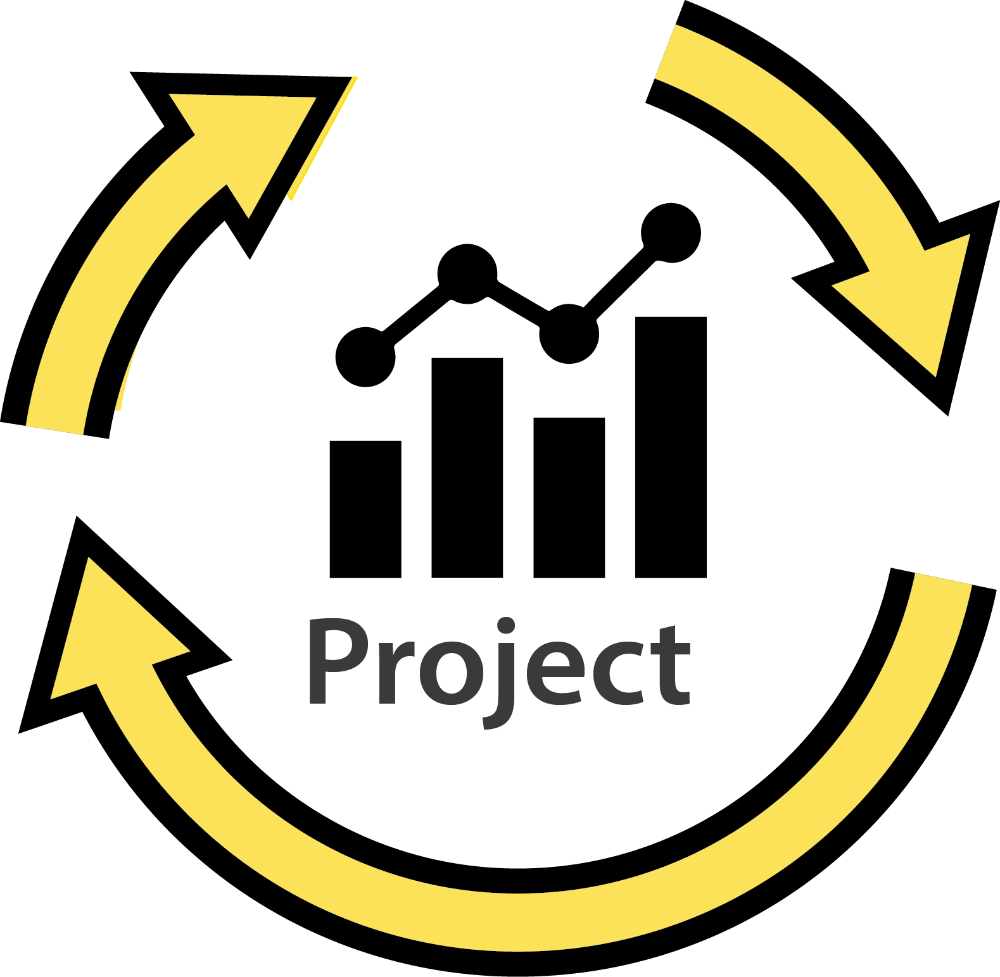

INFINEON TECHNOLOGIES
INTERN
AUG 2017- May 2018
 Methodolgy Development Activity List based on Trace
Automative Microcontroller

As Intern my responsible is to create the trace in microchip.

TATA CONSULTANCY SERVICE
SYSTEM ENGINEER
OCT 2018- JAN 2022
Flex cube Automation
in Citi Bank
As Tester my responsible is to test the web, mobile and API application.
INFINEON TECHNOLOGIES
INTERN
AUG 2017- May 2018
Methodolgy Development Activity List based on Trace
Automative Microcontroller
As Intern my responsible is to create the trace in microchip.